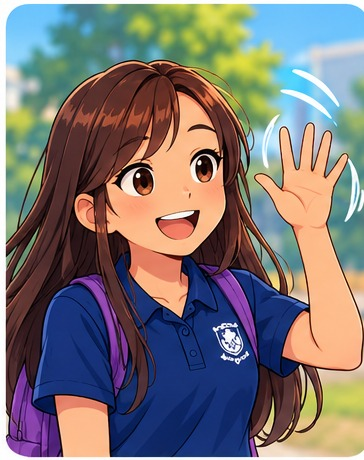

Let's start a conversation! 💬
Sometimes you want to talk to someone, but you're not sure what to say first. There are lots of ways to begin.

Small starts count!You can say hello, make a comment, ask a question—or decide not to talk right now.
1. Notice an opening 🔎
Taylor is standing near the school garden, looking at a horse picture on her notebook.
2. Three ways to start 💡
There isn't just one correct way. Try each starter to see how it might sound.
3. Keep the conversation going 🐴
Indie: “Hi Taylor! Is that a horse on your notebook?”
Taylor: “Yeah! I went horse riding on the weekend.”
4. Say it your way 🗣️
Imagine you want to talk to Taylor about horses. What might you say?
Nothing you type is saved or sent anywhere by this lesson. Listening uses your device's available voice.
Conversation Explorer!
You've practised noticing a possible topic, starting a conversation and responding to someone's answer.
Optional real-world challenge: With someone familiar, try a friendly comment or question about something you both enjoy.